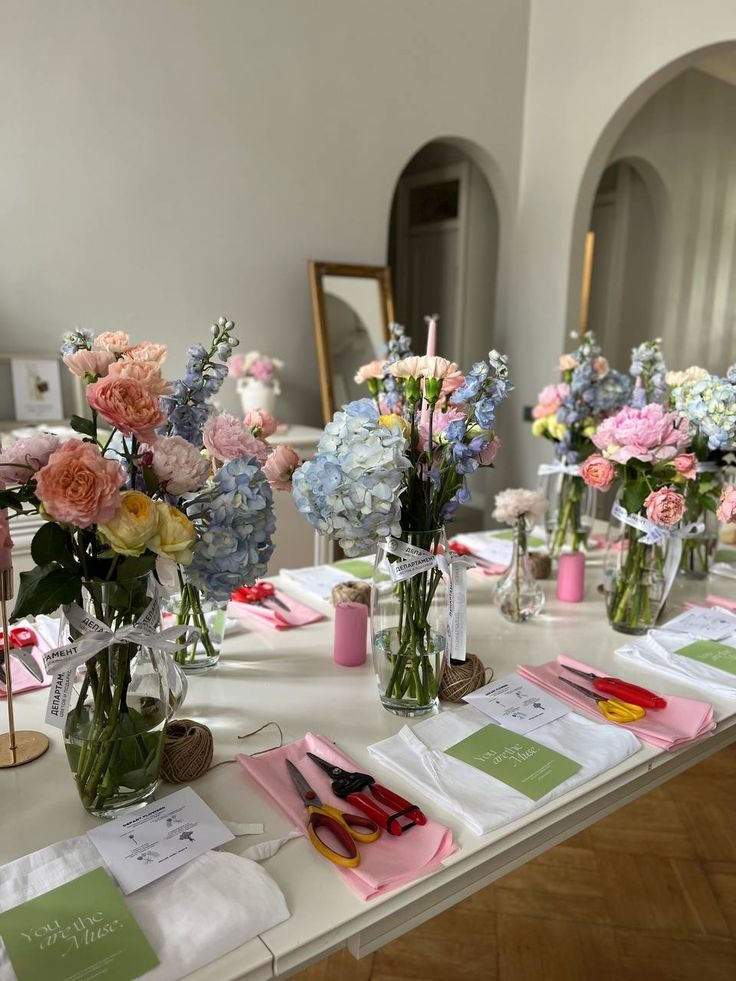
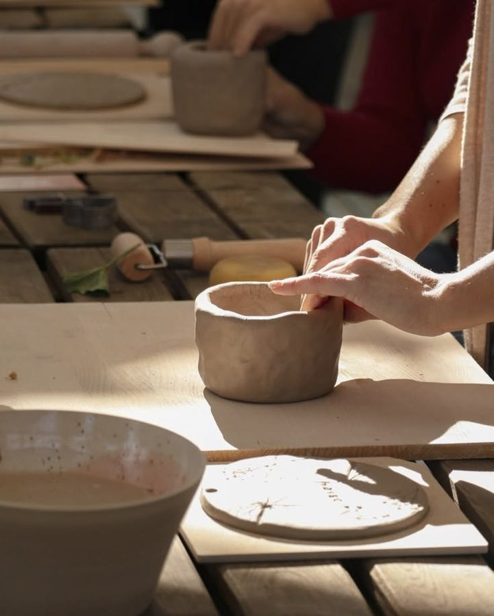
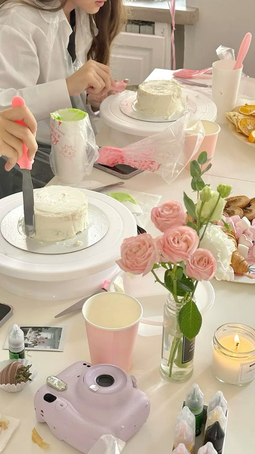
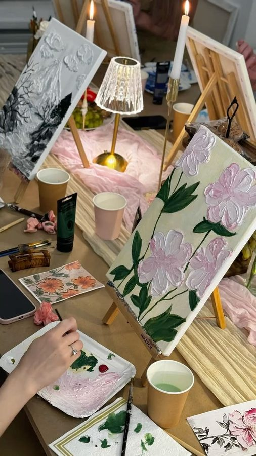
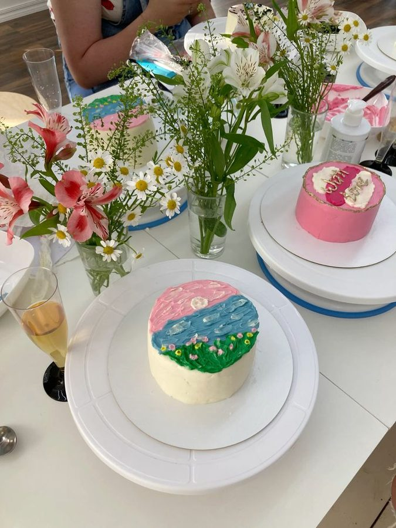
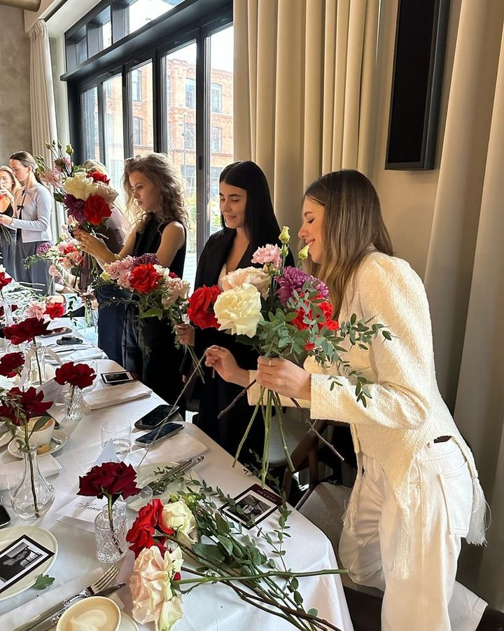

Seramik · Tablo · Pasta · Çiçek
Sakarya
Workshop
Üretmenin, keşfetmenin ve birlikte güzel şeyler yapmanın en keyifli hali.



Her ay yeni masalar,
yeni eller, yeni hikâyeler.
Hakkımızda
Bir masa, birkaç malzeme
ve bolca vakit.
Sakarya Workshop, elleriyle bir şey üretmeyi seven herkes için kuruldu. Seramikten pastaya, tablodan çiçek buketine kadar her atölyede amacımız aynı: yeni bir şey öğrenmek, acele etmeden üretmek ve masadan güzel bir anıyla kalkmak.
Deneyim gerekmez. Malzemeleri biz hazırlarız, size yalnızca gelmek ve keyfini çıkarmak kalır. Arkadaşlarınızla, sevdiğinizle ya da tek başınıza — masamızda herkese yer var.
- Yaratıcı üretim
- Birlikte vakit
- Yeni beceriler
- Keyifli deneyimler
Workshoplar
Dört atölye,
tek masa.
Her atölye yaklaşık 2–3 saat sürer. Tüm malzemeler, ikramlar ve eve götüreceğiniz eseriniz dahildir.
-
01
Seramik
Seramik üretme ve şekillendirme deneyimi. Çamuru elinizde hissedin; kendi kasenizi, kupanızı ya da tabağınızı şekillendirip boyayın.
-
02
Tablo
Kendi tablonu oluşturabileceğin yaratıcı resim deneyimi. Doku, renk ve fırça darbeleriyle tuvalinize kendi hikâyenizi işleyin.

-
03
Pasta
Pasta yapımı ve süslemesine odaklanan eğlenceli workshop. Krema kıvamından sıkma tekniklerine kadar kendi mini pastanızı tasarlayın.

-
04
Çiçek Buketi
Kendi çiçek buketini tasarlayabileceğin yaratıcı deneyim. Mevsim çiçeklerini seçin, renkleri dengeleyin ve buketinizi kendiniz bağlayın.

Masadan
kareler
Atölyelerimizden anlar. Daha fazlası için Instagram.
İletişim
Birlikte üretmeye
hazır mısın?
Takvim, grup etkinlikleri ve özel günler için bize yazın. Doğum günü, bekârlığa veda ya da şirket etkinliği — masayı sizin için kurarız.
- Telefon
- 0555 XXX XX XX
- 0555 XXX XX XX
- @sakaryaworkshop
- E-posta
- merhaba@sakaryaworkshop.com
- Konum
- Serdivan, Sakarya